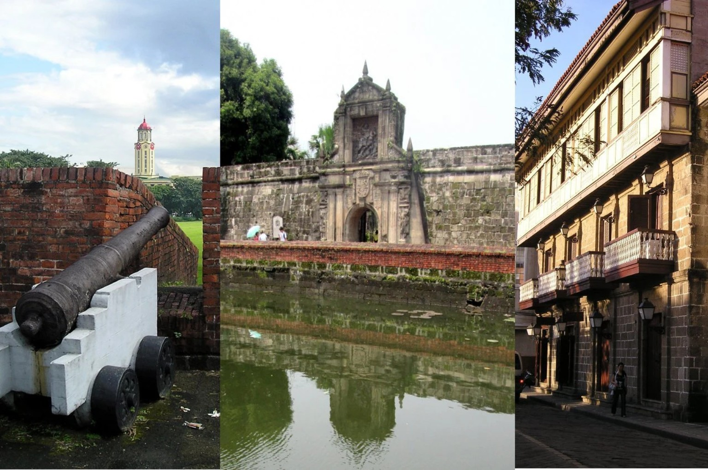

Your next chapter in Philippines
A little escape.
A lot to discover.
Welcome to Philippines
5 destinations8 tours

Intramuros, Manila ↗Historic walls. Filipino heritage.
Five places. Your journey.
Where you want to go?
Choose a destination.
Explore destination →

Cebu
2 tours
Bohol
1 tours
Boracay
2 tours
Palawan
1 toursA few good places to start
Make a day of it.

Intramuros Heritage Tour
takes you through Manila historic Walled City, featuring Spanish era fortifications, museums, and centuries-old churches.
4hrs durationAvailable daily
₱1,000 / person

Kawasan Falls Tour
A Kawasan falls tour in badian, cebu, typically features a canyoneering adventure through the Kanlaob River, ending at the famous multi-tiered turquoise waterfalls.
8hrs durationAvailable daily
₱2,500 / person

Nalusuan Island Tour
a small, one-hectare natural island and marine sanctuary located in the Cebu Strait between Mactan Island and Bohol.
6hrs · Island and snorkeling tourAvailable daily
₱2,200 / person

El Nido Island Hopping
explores the limestone cliffs, crystal clear lagoons, and white sand beaches of Bacuit Bay.
6hrs · Boat tourAvailable daily
₱1,800 / person

Bohol Countryside Tour
a classic 7hrs day trip covering the province's top natural and historical landmarks.
7hrs durationAvailable daily
₱2,000 / person

Boracay Island Hopping
A half-day or full day boat on a traditional Philippine bangka.
5hrs · Boat tourAvailable daily
₱1,500 / person

Boracay Paraw Sailing
You can book a sunset or daytime ride through the Sunset Paraw Sailing in Boracay on Klook.
1–2 hoursAvailable daily
₱1,000 / person

Manila Museum Tour
You can plan a great museum tour in Manila by visiting the core national complexes and historic district sites.
3hrs durationAvailable daily
₱500 / person
Plan ahead, travel easy
Schedules & available slot
Create and manage booking. Available slot update automatically when travelers are scheduled.